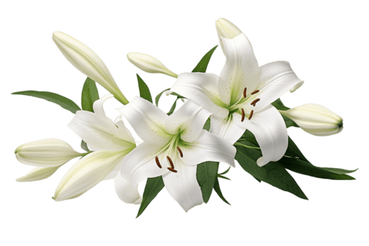
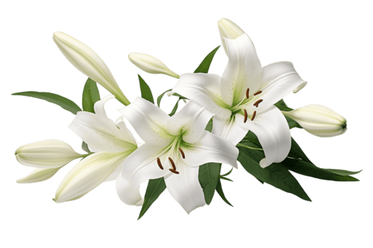

Eres la esencia de mis días,
la respiración que mi alma busca cuando el mundo pesa,
el agua que calma mi vida cuando todo arde,
la voz suave que Dios puso en mi camino
para recordarme que el amor también puede ser luz.
En ti entiendo la naturaleza:
que el sol no nace para sí mismo,
que los ríos no corren sin destino,
que las raíces solo se aferran donde encuentran paz.
Así soy contigo:
un corazón que por fin encontró dónde quedarse.
Te amo mucho, mucho, muchísimo, mi amor.
Eres el amor de mi vida,
la mano que quiero sostener incluso cuando tiemblen mis pasos,
la mirada que quiero buscar cada amanecer.
“Mujer virtuosa, ¿quién la hallará?
Porque su estima sobrepasa largamente a las piedras preciosas”
(Proverbios 31:10).
Y yo te encontré a ti…
mi tesoro, mi bendición, mi propósito.
Encomendamos nuestras almas a Dios,
porque Él es quien une lo que el mundo no puede separar:
“Y serán una sola carne… lo que Dios unió,
que no lo separe el hombre” (Mateo 19:5-6).
Quiero caminar contigo todos los días que me queden,
cuidarte con la paciencia del viento,
amarte con la firmeza de la montaña,
y abrazarte como quien encuentra por fin su hogar.
Porque tú, mi amor,
eres la esencia que sostiene mi alma,
la vida que Dios puso en mis manos,
y la eternidad que quiero compartir contigo.
No como promesa impuesta,
sino como elección consciente.
Si el amor es un acto de voluntad,
hoy elijo quedarme.
Contigo.
— Ian